Jina la Programu: OffLink
Watumiaji Walengwa: Watu wanaotaka kufanya simu za sauti za kikundi ndani ya mtandao mmoja wa WiFi
Tarehe ya Kuundwa: 9 Machi 2026
Sasisho la Mwisho: 11 Aprili 2026
OffLink ni programu inayokuwezesha kufanya simu za sauti za kikundi bila mtandao ndani ya mazingira yale yale ya WiFi / hotspot. Inatoa simu za sauti za kuchelewa kidogo kupitia mawasiliano ya P2P kwa kutumia WebRTC.
Mifano ya Matumizi:
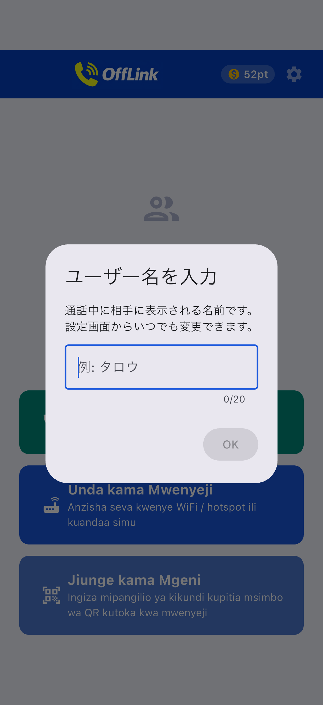
Skrini ya nyumbani mara baada ya kuzindua programu.
OffLink inafanya kazi katika hali ya WiFi LAN. Kila mtu anaunganishwa kwenye mtandao mmoja wa WiFi kufanya simu.
Kumbuka: Muunganisho wa mtandao hauhitajiki.
| Jukumu | Vifaa Vinavyoungwa Mkono | Maelezo |
|---|---|---|
| Mwenyeji (Host) | Android / iPhone | Kifaa kinachosimamia simu |
| Mgeni (Guest) | Android / iPhone | Kifaa kinachojiunga na simu |
Onyo: Kila mtu lazima awe ameunganishwa kwenye mtandao mmoja wa WiFi.
| Ruhusa | Matumizi | Athari Inapokatiwa |
|---|---|---|
| Maikrofoni | Simu za sauti | Haiwezi kupiga simu |
| Kamera | Kuchanganua msimbo wa QR | Haiwezi kusajili kikundi kupitia QR |
| Vifaa vilivyo Karibu (WiFi) ※Android | Kugundua mtandao wa WiFi | Haiwezi kugundua Host |
| Mahali ※Android | Kuchanganua WiFi (mahitaji ya OS) | Haiwezi kupata SSID ya WiFi |
| Bluetooth ※Android | Kuunganisha vifaa vya masikioni | Haiwezi kutumia vifaa vya masikioni |
| Arifa ※Android | Arifa za mwaliko wa simu | Hakuna arifa za nyuma |
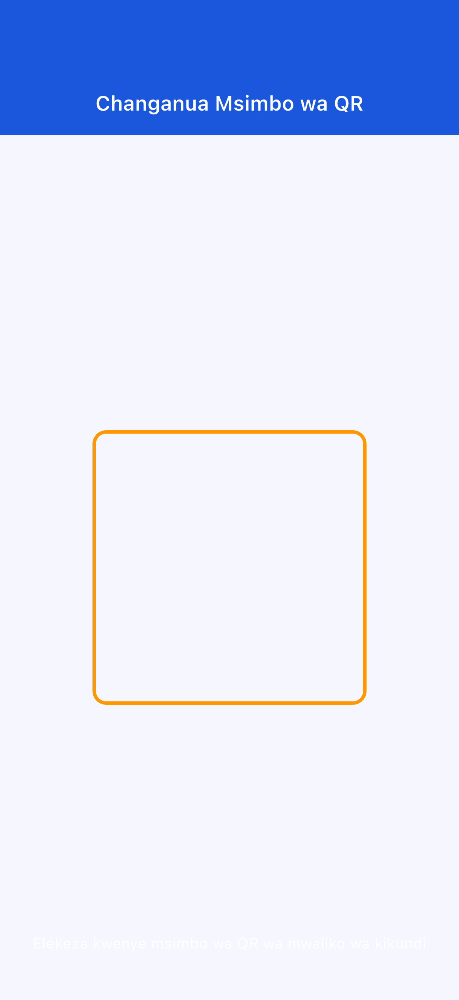
Ikiwa ruhusa imekataliwa: Nenda "Mipangilio" → "Programu" → "OffLink" kubadilisha.
Hatua ya 1: Kila mtu aunganishe kwenye WiFi moja
Hatua ya 2: Gusa "Piga Simu Sasa" (kitufe cha kijani)
Hatua ya 3: Ingiza jina la mtumiaji
Hatua ya 4: Chagua kiwango na anza simu
Hatua ya 5: Arifa ya mwaliko itatumwa kiotomatiki kwa wanachama
Hatua ya 1: Gusa "Unda kama Host" (kitufe cha bluu)
Hatua ya 2: Ingiza jina la kikundi na nenosiri kisha gusa "Unda"

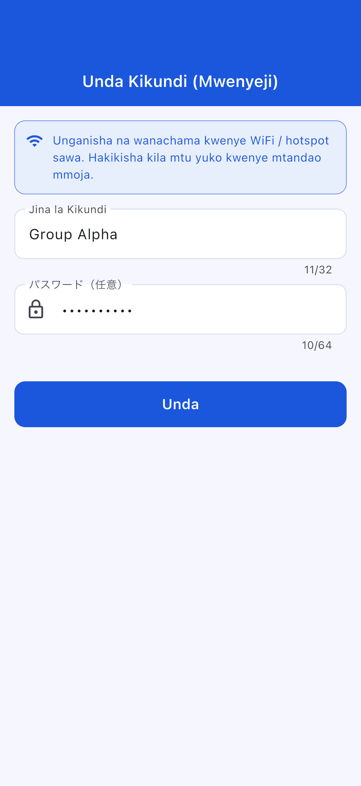
Hatua ya 3: Chagua kitendo cha kuunda
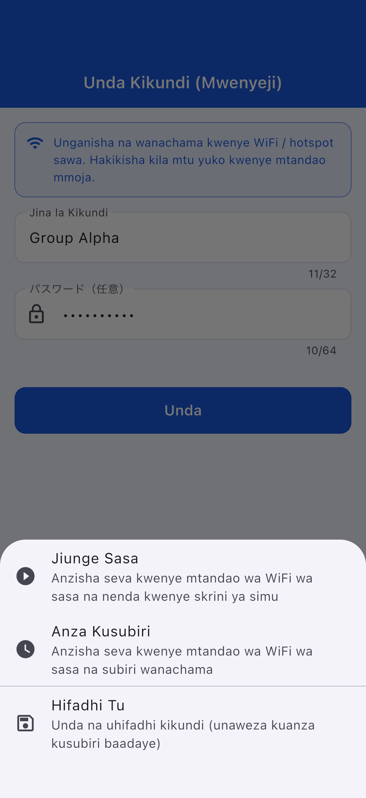
| Kitendo | Maelezo |
|---|---|
| Jiunge Sasa | Anzisha seva na anza simu |
| Anza Kusubiri | Anzisha seva na usubiri |
| Hifadhi Tu | Inaweza kuanzishwa baadaye |
Hatua ya 1: Gusa "Jiunge kama Guest" (kitufe cha bluu iliyofifia)
Hatua ya 2: Chagua njia ya kujiunga
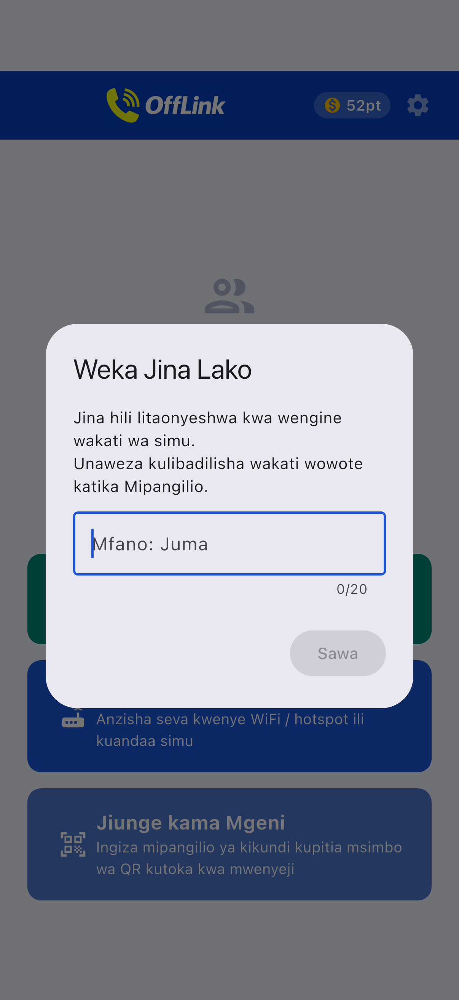
| Njia | Uendeshaji |
|---|---|
| 📱 Changanua QR | Changanua QR ya Host |
| 📋 Bandika msimbo | Bandika msimbo ulioshirikiwa |
| ✏️ Ingiza kwa mkono | Ingiza moja kwa moja |
Kushiriki QR (upande wa Host):
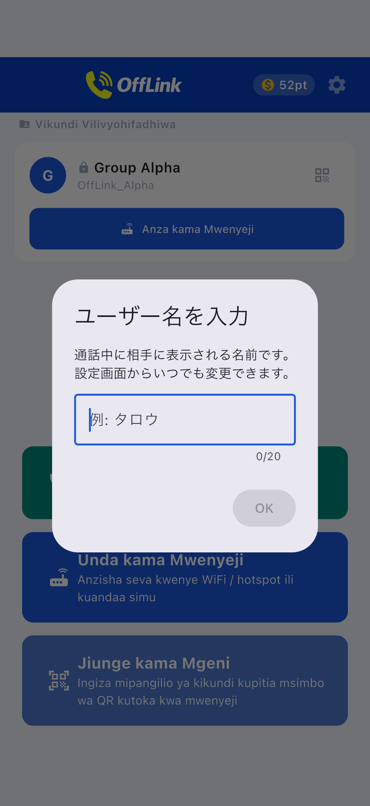
Kubandika msimbo (upande wa Guest):
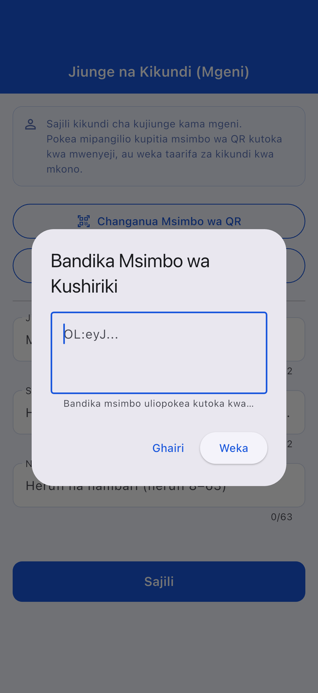
Hatua ya 3: Gusa "Sajili"
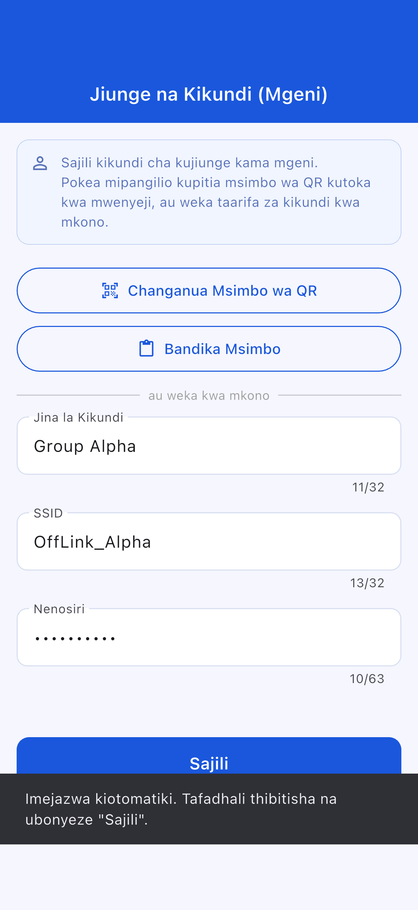
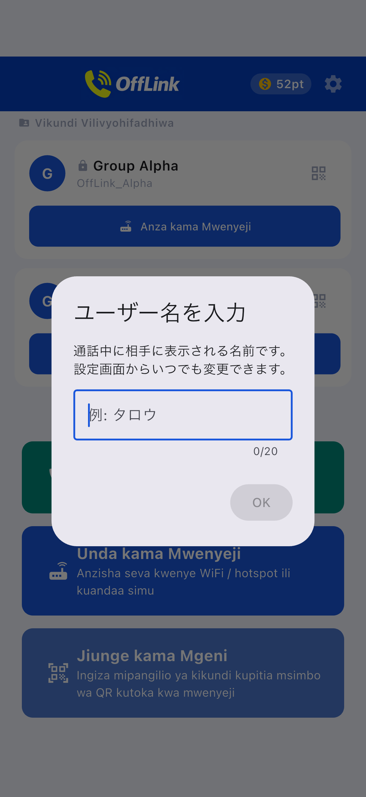
Skrini ya kujiunga kwa Mgeni:
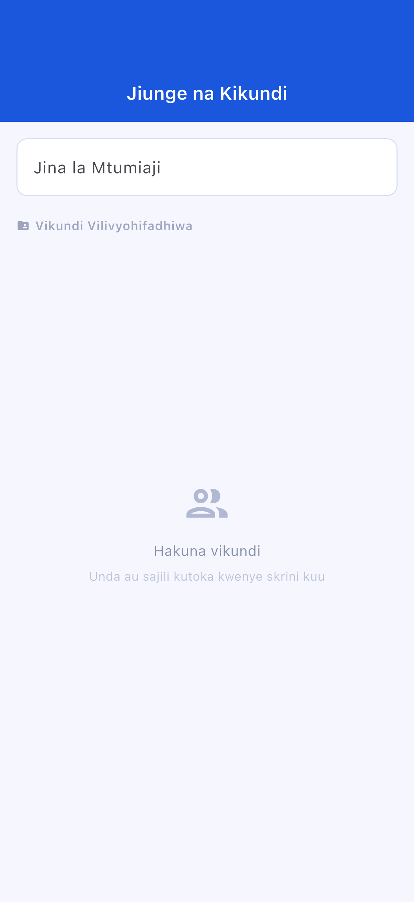
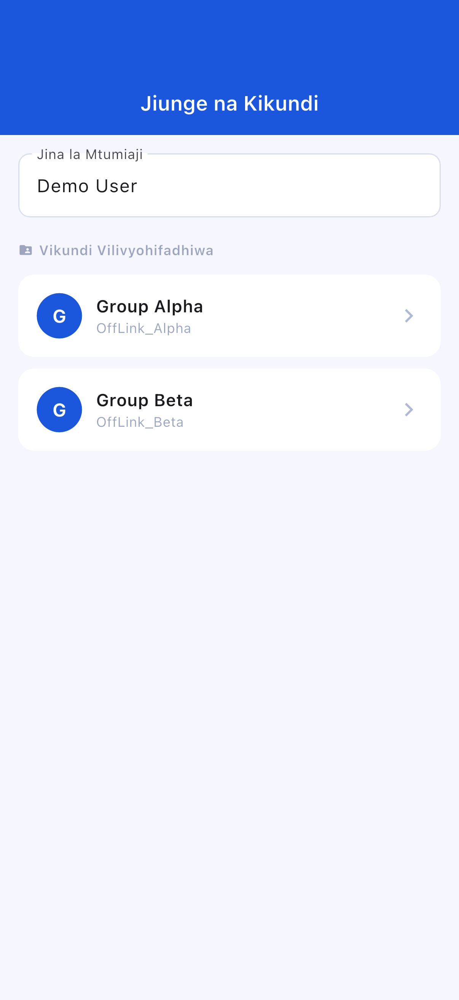
Skrini ya kusubiri:
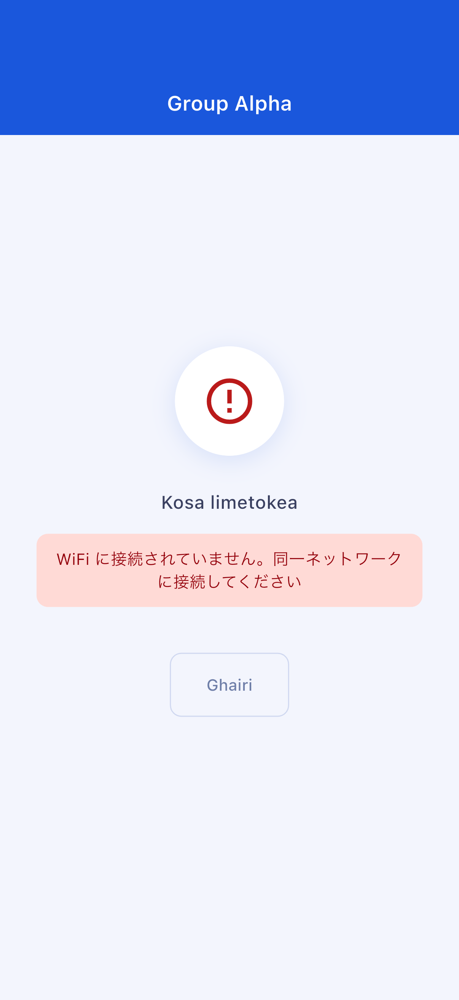
Skrini ya simu:
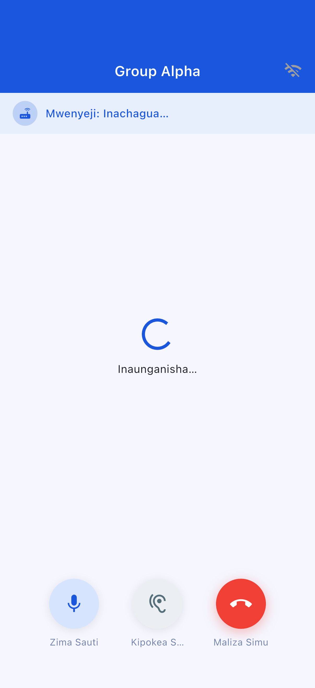
| Kitufe | Kazi |
|---|---|
| 🎤 Nyamazisha | Washa/zima maikrofoni |
| 🔊 Badilisha pato la sauti | Spika / Bluetooth / Kipokezi cha sikio |
| 🔴 Maliza simu | Ondoka kwenye simu |
| Kiwango | Pointi Zinazotumika | Washiriki wa Juu |
|---|---|---|
| Standard | 10 pt | Watu 4 |
| Large | 20 pt | Watu 10 |
Haiwezi kuanzishwa kiotomatiki kutoka ndani ya OffLink. Sanidi kwa mkono.
Nenda "Mipangilio" → "Programu" → "OffLink" → "Ruhusa" kubadilisha
| Kipengee | Yaliyomo ya Kikwazo |
|---|---|
| Washiriki wa juu | Standard: 4 / Large: 10 |
| Njia ya simu | WiFi LAN pekee |
| Nyuma | Vikwazo kulingana na kifaa |
| Kikomo cha kuhifadhi vikundi | Free: 5 / Premium: Bila kikomo |
| Kipengee | Iliyopendekezwa |
|---|---|
| Android | 5.0+ (API 21+) |
| iOS | 13.0+ |
| Betri | 80% au zaidi inapendekezwa |
| Hifadhi | 100MB au zaidi |
| WiFi | Ruta / Hotspot / WiFi ya mfukoni |